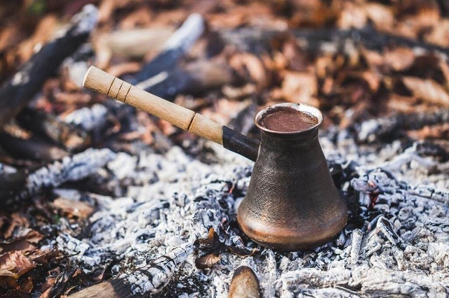
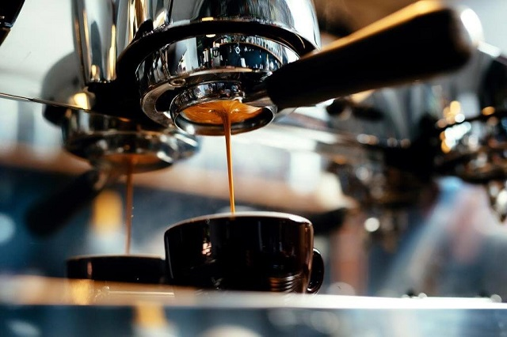

КАФЕТІЄРА (cafetiere) – знаменитість із Італї, яка може й служити гарним декором. Насправді вона у мене стоїть на полиці, бо я користуюся машинкою для еспресо. Однак, коли виключають світло (або просто гостям цікаво), настає її великий момент, і розкривається одна з її переваг – кава готується на плиті. Кафетієру розкручують, нижню частину наповнюють водою аж до вбудованого вентиля. Потім вставляють сито з дрібно-середньо меленою кавою, яку треба притиснути так, як і в еспресомашинах. Конструкцію знову збирають і сталять на вогонь.
МОКА (турка) – турка, це найстарший у світі пристрій для готування кави. І єдиний, де каву подають разом із осадом. Традиційно напій готують у турці, помістивши її у ємність із піском. Однак, і на вогні можна готувати. Існують різні виконання, кращі з яких використовують матеріали, що добре передають температуру (срібло та мідь). Це особливий метод приготування, де не треба багато техніки. І все одно вражаючий. Хоча дехто не може пити каву з осадом. А хтось із нього навіть вичитують майбутнє ;) На жаль, все рідше заклади пропонують цей вид приготування кави.

ФРЕНЧ ПРЕС. Перевага в тім, що апарат недорогий, і кава виходить дуже ароматичною. Через доволі грубе сито часто попадають і дрібні шматочки кави, що вважається плюсом. Важливо не забути про час, бо надто довге настоювання призведе до гіркоти. Також промивання френч пресу не з найприємніших.

ФІЛЬТРОВАНА КАВА (purover або dripper) – неважливо, електричний чи ручний варіант. Дрібно помелену каву поміщають у фільтр і помаленьку поливають гарячою водою. Попри «заварну», цей метод найбільше розповсюджений між зрілими кавоманами. І то не робить її одразу «бабусиним напоєм». Про це свідчить не тільки наявність модних і кольорових варіантів із кераміки, скла чи пластику, наприклад, японського виробника «Hario».
ФІЛЬТР-КАВА або "крапельниця. "Цей вид напою найбільш популярний в Скандинавії й Америці. Готується він у крапельній кавоварці: зерна середнього або грубого помелу засипають у спеціальну воронку-фільтр і обдають гарячою водою. Подають «крапельницю» у великих кухлях по 200–220 мл.